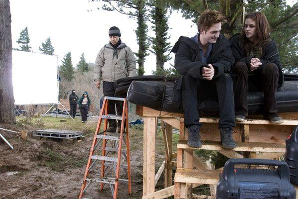
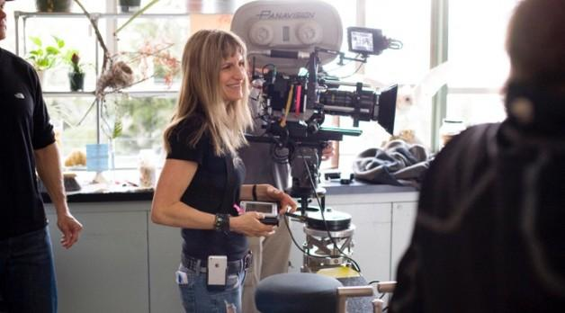
ARCHIVO DE PRODUCCIÓN · 2008—2012
Detrás de
Twilight.
Antes de convertirse en Forks, Volterra o Isla Esme, hubo cámaras, sets, maquillaje y un equipo construyendo cada escena.
EXPLORAR EL ARCHIVO
01
FUERA DE CÁMARA
La saga desde
el otro lado.
Cinco películas construyeron un universo
reconocible en todo el mundo. Este archivo
reúne algunos de los momentos que sucedieron
antes y después de cada toma.
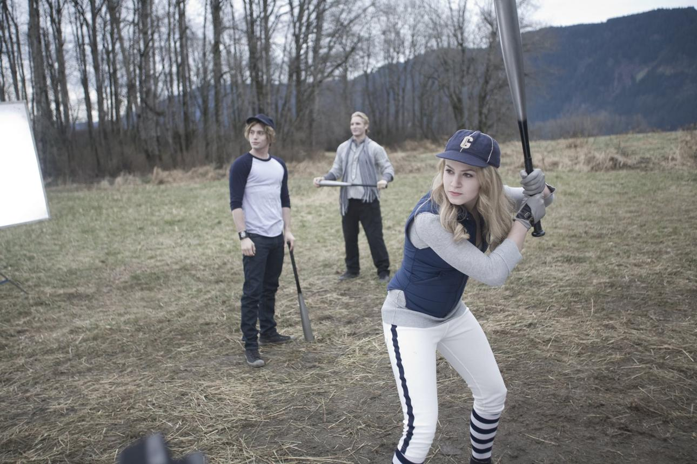
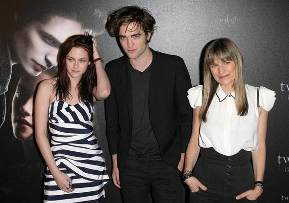
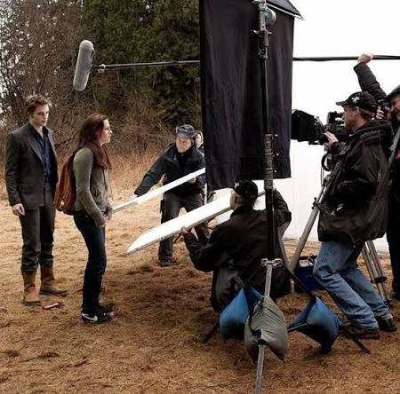
TWILIGHT ARCHIVE
Cada imagen guarda una parte de lo que ocurrió fuera de cámara.2008 — 2012
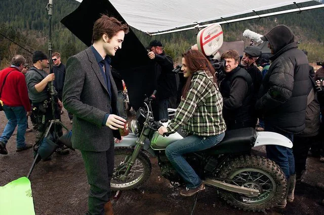
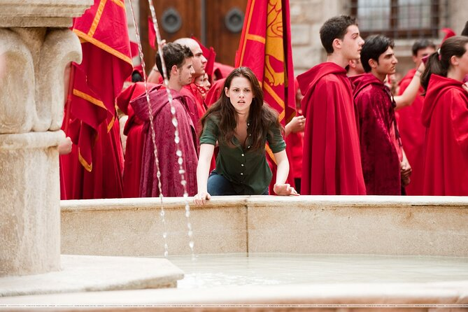
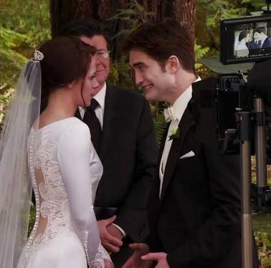
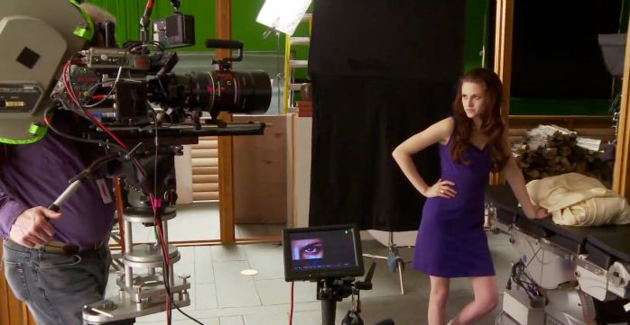
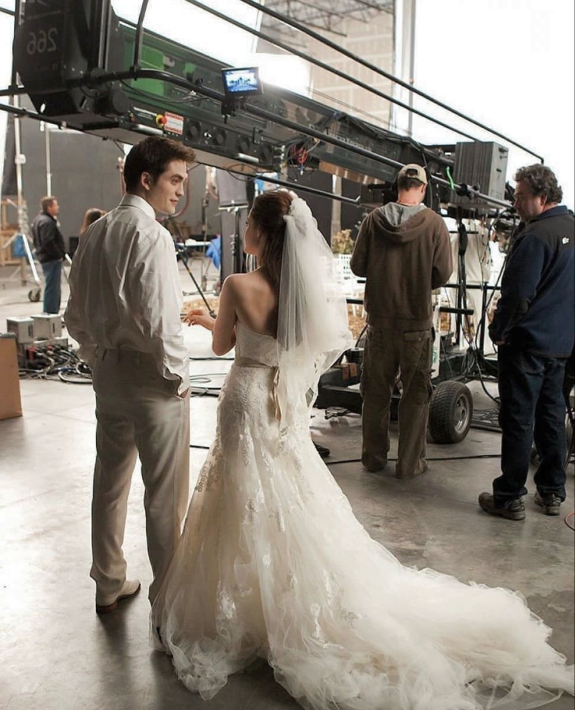
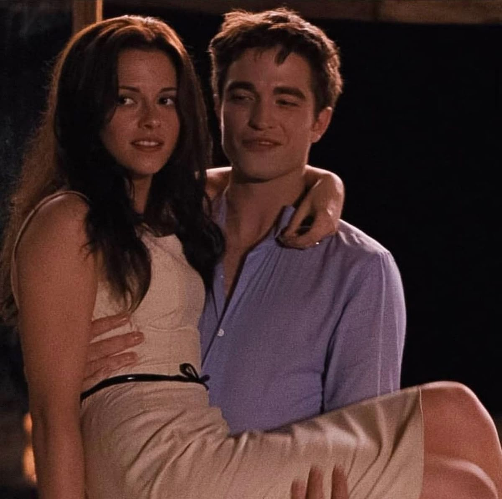
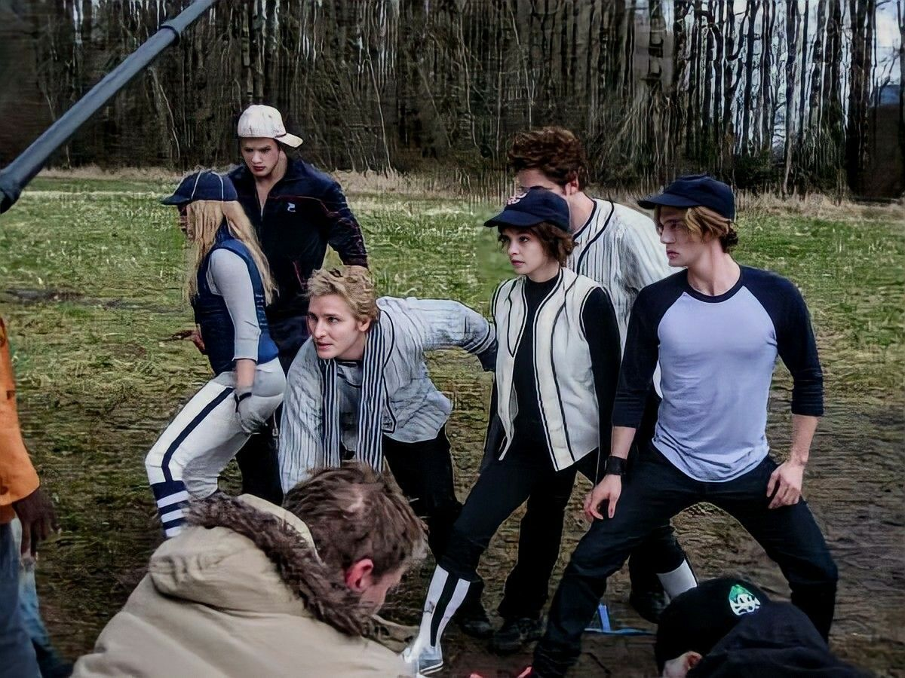
2008 — 2012